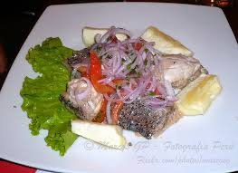

Preparacion Corta la cebolla morada en tiras finas y sumérgela en agua por 10 minutos, con esto vas a suavizar un poco el sabor. Pica el ají en tiras finas, cuidando que no tenga semillas ni parte de la vena, que es donde está el sabor picante más fuerte. Limpia bien el pescado y córtalo en cubos de aproximadamente 1,5 centímetros de diámetro. Pica el culantro pequeñito. En el caso de los acompañantes, hierve la batata sin piel hasta que se ponga tierna y reserva. Una vez hayas hecho todos estos primeros pasos, puedes proceder con el armado del ceviche como tal. Mezcla el pescado, con la cebolla, el culantro y una pizca de sal en un bowl(recipiente grande) donde quepa todo cómodamente. Seguidamente agrégale el jugo del limón y revuelve bien
Preparacion Lavar bien el pescado y sancocharlo en agua caliente por unos cinco minutos, escurrirlo y acompañarlo con una salsa hecha con cebolla, ají, culantro, tomate, jugo de limón, un chorrito de aceite, sal y pimienta. Servir con zarandaja y yuca sancochada o chifles 
Sudado Preparacion Sazone los filetes de pescado con sal y pimienta, Reserve. Caliente el aceite en una olla a fuego bajo y fría el ajo con la cebolla, el tomate y el ají amarillo molido durante dos minutos. Acomode encima los filetes de pescado y vierta el caldo y la chicha. Tape la olla y cocine a fuego medio durante 10 minutos. Agregue el culantro y el ají amarillo entero, y rectifique la sazón. Tape la olla y retire del fuego. Sirva el sudado de pescado con la yuca sancochada y el arroz.
Arroz con mariscos Preparacion Lavar bien los choros y colocar en una olla y cubrir apenas con agua fría. Llevar a hervir y esperar que los choros se abran. Retirarlos inmediatamente del agua hirviendo para que no queden duros y dejarlos enfriar. Una vez fríos retirarlos del caparazón y limpiarlos. Cortar las almejas en tiras, enjuagar y hervir de 15 a 20 segundos en agua. Escurrir inmediatamente y colocar en un recipiente con agua y hielo. Reservar. Cocinar los langostinos o camarones en agua hirviendo con sal, de 2 a 3 minutos. Escurrir y conservar en agua fría. Reservar.
Parihuela Preparacion Hervir las cabezas y espinazos de pescado con 2 ½ litros (10 tazas) de agua con sal por ½ hora. Agregar los choros bien lavados y hervir por 10 minutos más. Colar y reservar el caldo. Freír con el aceite, los ajos y las cebollas. Cuando la cebolla esté transparente, agregar los filetes de pescado y freír unos instantes, luego agregar el tomate, pimentón, ají panca molido, ají mirasol entero, sal y pimienta, hoja de laurel y orégano. Cocinar de 3 a 4 minutos, añadir el vino y continuar la cocción a fuego lento por 5 minutos más. Agregar el caldo de pescado, salsa de soya, culantro, perejil. Al momento de servir incorporar los mariscos lavados y los choros cocidos dando un ligero hervor. Sazonar con sal y pimienta. Servir de inmediato con unas gotas de limón y cebollita china picada, como adorno.
Langosta a la parrilla Preparacion Para preparar la langosta a la parrilla lo primero que debemos hacer es cocer la langosta durante 5 minutos y después cortarla transversalmente sin llegar a dividirla; luego, agrégale limón por la abertura realizada y píntarla con mantequilla por la parte visible; al mismo tiempo que le vamos agregando sal y orégano. Para finalizar, póner en la barbacoa con la abertura hacia abajo y ásala durante 5 minutos